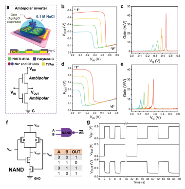
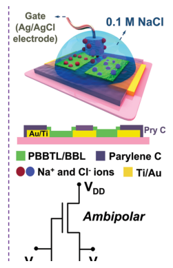
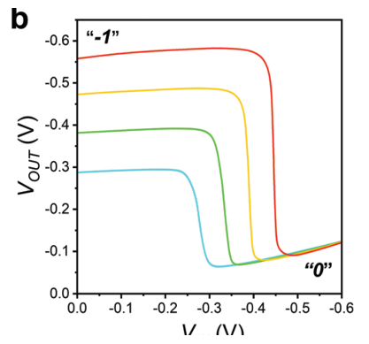
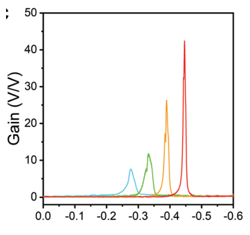
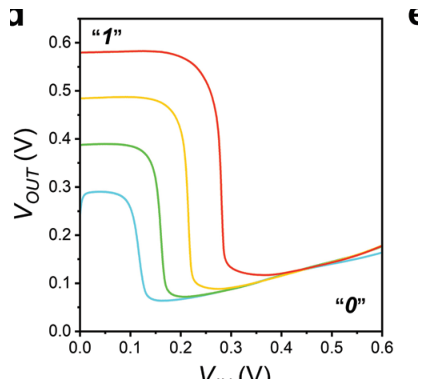
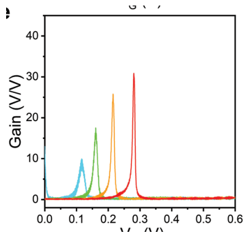
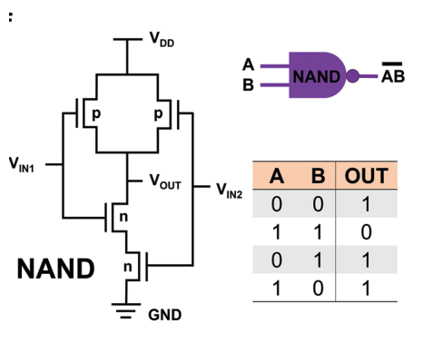
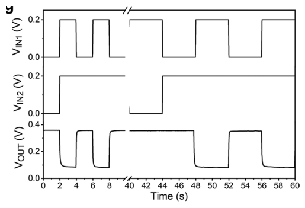

2. Scraping data from PDF files
The PDFScraper is an extension to the code which allows users to create a folder, deposit their PDF files to scrape all the image and text data and store them in json format. Below is a step by step tutorial on how to use it for an example PDF file.
First, we need to import the Pipeline and set the test_json file. We should indicate the name of the pdf folder, select the llm and provide the openai_API credentials.
[6]:
from exsclaim.pipeline import Pipeline
[ ]:
test_json = {
"name": "html-ECPs",
"pdf_folder": "pdf_files" ,
"llm": "gpt-3.5-turbo",
"openai_API": YOUR_OPENAI_API_KEY ,
"save_format": ["boxes", "save_subfigures"],
"logging": ["print", "exsclaim.log"]
}
Once the run is completed successfully a SUCCESS message will be printed. Inside the exsclaim directory the generated documents can be located into the /exsclaim/output/name
[10]:
test_pipeline = Pipeline(test_json)
results = test_pipeline.run(caption_distributor=True,
journal_scraper=False, figure_separator=True, pdf_scraper=True)
@@@@@@@@@@@@@@@@@@@@@@@@@@@@@@@@@@@@@@@@@@@@@@@@@@@@
@@@@@@@@@@@@@@@@@@@& /&@@@( /@@@@@@@@@@@@@@@@@@@
@@@@@@@@@@@@@@@ %@@@@@@@@@@@@@@@@@@@ *@@@@@@@@@@@@@@
@@@@@@@@@@@@ @@@@@@@@@@@@@@, .@@@@@@@@ *@@@@@@@@@@@
@@@@@@@@@.#@@@@@@@@@@@@@@@@, @@@@@@@@@@ @@@@@@@@@
@@@@@@@&,@@@@@@@@@@@@@@@@@@. @@@@@@@@@@@@ @@@@@@@
@@@@@@ @@@@@@@@@@@@@@@@@@@@ @@@@@@@@@@@@@ @@@@@@
@@@@@ @@@@@@@@@@@@@@@@@@@@@ *@@@@@@@@@@@@@@/@@@@@
@@@@ @@@@@@@@@@@@@@@@@@@@@@ @@@@@@@@@@@@@@@@,@@@@
@@@ @@@@@@@@@@@@@@@@@@@@@@& @@@@@@@@@@@@@@@@@ @@@
@@@,@@@@@@@@@@@@@@@@@@@@@@* (@@@@@@@@@@@@@@@@@@%@@
@@.@@@@@@@@@@@@@@@@@@@@@@@ @@@@@@@@@@@@@@@@@@@ @@
@@ @@@@@@@@@@@@@@@@@@@@@@@ @@@@@@@@@@@@@@@@@@@ @@
@@ @@@@@@@@@@@@@@@@@@@@@@/ &@@@@@@@@@@@@@@@@@@@ @@
@@,@@@@@@@@@@@@@@@@@@@@@@ @@@@@@@@@@@@@@@@@@@@ @@
@@@.@@@@@@@@@@@@@@@@@@@@& @@@@@@@@@@@@@@@@@@@@@%@@
@@@ @@@@@@@@@@@@@@@@@@@@@ /@@@@@@@@@@@@@@@@@@@@ @@@
@@@@ @@@@@@@@@@@@@@@@@@@@@@@@@@@@@@@@@@@@@@@@@@,@@@@
@@@@@ @@@@@@@@@@@@@@@@@@@@@@@@@@@@@@@@@@@@@@@@*@@@@@
@@@@@@ @@@@@@@@@@@@@@@@@@@@@@@@@@@@@@@@@@@@@@ @@@@@@
@@@@@@@@ @@@@@@@@@@@@ @@@@@@@@@@@@@@@@@@@ @@@@@@@
@@@@@@@@@.(@@@@@@@@@@ @@@@@@@@@@@@@@@@ @@@@@@@@@
@@@@@@@@@@@@ @@@@@@@@@# #@@@@@@@@@@@@ /@@@@@@@@@@@
@@@@@@@@@@@@@@@ ,@@@@@@@@@@@@@@@@@@@ &@@@@@@@@@@@@@@
@@@@@@@@@@@@@@@@@@@@ ,%@@&/ (@@@@@@@@@@@@@@@@@@@
@@@@@@@@@@@@@@@@@@@@@@@@@@@@@@@@@@@@@@@@@@@@@@@@@@@@
c:\Users\kvriz\Desktop\exsclaim2.0\exsclaim\utilities\models.py:36: FutureWarning: You are using `torch.load` with `weights_only=False` (the current default value), which uses the default pickle module implicitly. It is possible to construct malicious pickle data which will execute arbitrary code during unpickling (See https://github.com/pytorch/pytorch/blob/main/SECURITY.md#untrusted-models for more details). In a future release, the default value for `weights_only` will be flipped to `True`. This limits the functions that could be executed during unpickling. Arbitrary objects will no longer be allowed to be loaded via this mode unless they are explicitly allowlisted by the user via `torch.serialization.add_safe_globals`. We recommend you start setting `weights_only=True` for any use case where you don't have full control of the loaded file. Please open an issue on GitHub for any issues related to this experimental feature.
model.load_state_dict(torch.load(checkpoint, map_location="cpu"))
c:\Users\kvriz\miniconda3\envs\exsclaim2.0\Lib\site-packages\torchvision\models\_utils.py:208: UserWarning: The parameter 'pretrained' is deprecated since 0.13 and may be removed in the future, please use 'weights' instead.
warnings.warn(
c:\Users\kvriz\miniconda3\envs\exsclaim2.0\Lib\site-packages\torchvision\models\_utils.py:223: UserWarning: Arguments other than a weight enum or `None` for 'weights' are deprecated since 0.13 and may be removed in the future. The current behavior is equivalent to passing `weights=FasterRCNN_ResNet50_FPN_Weights.COCO_V1`. You can also use `weights=FasterRCNN_ResNet50_FPN_Weights.DEFAULT` to get the most up-to-date weights.
warnings.warn(msg)
Running PDF Scraper
articles ['pdf_files\\pdf_test_file.pdf']
>>> (1 of 1) Extracting figures from: pdf_files\pdf_test_file.pdfProcessing page 1
Found 2 images on page 1
No rectangles found for image xref 1 on page 1
Saved image page_1_img_1.png
Processing page 2
Found 0 images on page 2
No images with positions found on page 2
Processing page 3
Found 1 images on page 3
Converting image xref 69 from colorspace DeviceCMYK to RGB
Saved image page_3_img_1.png
Processing page 4
Found 0 images on page 4
No images with positions found on page 4
Processing page 5
Found 1 images on page 5
Converting image xref 92 from colorspace DeviceCMYK to RGB
Saved image page_5_img_1.png
Processing page 6
Found 1 images on page 6
Converting image xref 99 from colorspace DeviceCMYK to RGB
Saved image page_6_img_1.png
Processing page 7
Found 0 images on page 7
No images with positions found on page 7
Processing page 8
Found 2 images on page 8
Converting image xref 109 from colorspace DeviceCMYK to RGB
Saved image page_8_img_1.png
Converting image xref 110 from colorspace DeviceCMYK to RGB
Saved image page_8_img_2.png
Processing page 9
Found 0 images on page 9
No images with positions found on page 9
Processing page 10
Found 0 images on page 10
No images with positions found on page 10
Processing page 11
Found 0 images on page 11
No images with positions found on page 11
Total images saved: 6
Image: page_1_img_1.png, Page: 1, Captions: N/A
Image: page_3_img_1.png, Page: 3, Captions: Figure 1. Characterization of the new p-type ladder-type polymer. a) Molecular structure of PBBTL, and b) schematic of OECTs device configuration. c) A representative output characteristic for the PBBTL-based OECT (channel width/length = 100/5 μm, thickness d = 102 nm) with VG varying from 0 to −0.5 V, and VD varying from 0 to −0.6 V at a step rate of −0.1 V, and d) the associated transfer curve with the corresponding transconductance, at VD = −0.3 V and a 1 V s−1 sweep rate of 0.05 V s−1, operated in 0.1 M NaCl aqueous electrolyte. e) Benchmarking of this new ladder-type conjugated polymer against those reported in the literature on OECTs. f) The dynamic current response of this PBBTL OECTs under a square gate bias with a pulse width of 50 ms, at VG = −0.3 V. g) Electrochemical impedance spectroscopy (EIS) of the PBBTL film operated in 0.1 M NaCl aqueous electrolyte under a constant DC bias of −0.8 V. h) Pulse stability of PBBTL OECT operated in 0.1 M NaCl, with VG varying from 0 to −0.6 V, at a VD = −0.6 V.
Image: page_5_img_1.png, Page: 5, Captions: N/A
Image: page_6_img_1.png, Page: 6, Captions: Figure 3. Bulk-heterojunction OECTs. a) The output transfer curves and b) the associated transconductance of the BHJ OECTs (PBBT:BBL = 3:1), operated in 0.1 M aqueous NaCl electrolyte, with a channel width/length = 100 μm/5 μm, thickness d = 102 nm. Note that the source electrode is grounded for all the measurements. c) The μC* value and peak gm value at different BBL content. d) Drain-current transient response of this BHJ OECT, with VG varying from 0 to |0.6| V and VD = |0.3| V. e) Pulse stability of the BHJ OECT. f,g) In situ spectroelectrochemistry measurements of PBBT:BBL (3:1) composite film under a progressive increment of the bias from 0 to 0.8 V at a step of 0.1 V (f) and from 0 to −0.6 V at a step of −0.1 V (g), operated in 0.1 M NaCl aqueous electrolyte. h) HAADF-STEM images reveal the internal structures of pristine PBBTL, hybrid PBBTL:BBL, and pristine BBL films.
Image: page_8_img_1.png, Page: 8, Captions: Figure 4. Ambipolar inverter consisting of two heterojunctions OECTs. a) Device configuration of a complementary logic circuit based on the PBBTL:BBL heterojunction OECTs. b,d) A representative voltage transfer curve of the complementary inverter at various supply voltages, and c,e) the associated voltage gains. f) NAND gate consisting of the PBBTL:BBL (3:1) heterojunction OECTs. g) Input and output given by the NAND gate showing “0” and “1” states.
Image: page_8_img_2.png, Page: 8, Captions: Figure 5. EOG signals monitored by BHJ complementary circuits. a) The operational principle of the hybrid circuit in EOG signals monitoring during left-right eye movement, and b) the associated EOG signals obtained using the BHJ OECTs complementary inverter. c) Up-down eye movements, and d) the associated EOG signals obtained using the BHJ OECT complementary inverter.
>>> Time Elapsed: 83.73 sec (1 articles)
Running Caption Distributor
>>> (1 of 6) Parsing captions from: page_1_img_1.pngfull caption N/A
>>> (2 of 6) Parsing captions from: page_3_img_1.pngor on figue: page_1_img_1.pngfull caption Figure 1. Characterization of the new p-type ladder-type polymer. a) Molecular structure of PBBTL, and b) schematic of OECTs device configuration. c) A representative output characteristic for the PBBTL-based OECT (channel width/length = 100/5 μm, thickness d = 102 nm) with VG varying from 0 to −0.5 V, and VD varying from 0 to −0.6 V at a step rate of −0.1 V, and d) the associated transfer curve with the corresponding transconductance, at VD = −0.3 V and a 1 V s−1 sweep rate of 0.05 V s−1, operated in 0.1 M NaCl aqueous electrolyte. e) Benchmarking of this new ladder-type conjugated polymer against those reported in the literature on OECTs. f) The dynamic current response of this PBBTL OECTs under a square gate bias with a pulse width of 50 ms, at VG = −0.3 V. g) Electrochemical impedance spectroscopy (EIS) of the PBBTL film operated in 0.1 M NaCl aqueous electrolyte under a constant DC bias of −0.8 V. h) Pulse stability of PBBTL OECT operated in 0.1 M NaCl, with VG varying from 0 to −0.6 V, at a VD = −0.6 V.
>>> (3 of 6) Parsing captions from: page_5_img_1.pngor on figue: page_3_img_1.pngfull caption N/A
>>> (4 of 6) Parsing captions from: page_6_img_1.pngor on figue: page_5_img_1.pngfull caption Figure 3. Bulk-heterojunction OECTs. a) The output transfer curves and b) the associated transconductance of the BHJ OECTs (PBBT:BBL = 3:1), operated in 0.1 M aqueous NaCl electrolyte, with a channel width/length = 100 μm/5 μm, thickness d = 102 nm. Note that the source electrode is grounded for all the measurements. c) The μC* value and peak gm value at different BBL content. d) Drain-current transient response of this BHJ OECT, with VG varying from 0 to |0.6| V and VD = |0.3| V. e) Pulse stability of the BHJ OECT. f,g) In situ spectroelectrochemistry measurements of PBBT:BBL (3:1) composite film under a progressive increment of the bias from 0 to 0.8 V at a step of 0.1 V (f) and from 0 to −0.6 V at a step of −0.1 V (g), operated in 0.1 M NaCl aqueous electrolyte. h) HAADF-STEM images reveal the internal structures of pristine PBBTL, hybrid PBBTL:BBL, and pristine BBL films.
>>> (5 of 6) Parsing captions from: page_8_img_1.pngor on figue: page_6_img_1.pngfull caption Figure 4. Ambipolar inverter consisting of two heterojunctions OECTs. a) Device configuration of a complementary logic circuit based on the PBBTL:BBL heterojunction OECTs. b,d) A representative voltage transfer curve of the complementary inverter at various supply voltages, and c,e) the associated voltage gains. f) NAND gate consisting of the PBBTL:BBL (3:1) heterojunction OECTs. g) Input and output given by the NAND gate showing “0” and “1” states.
>>> (6 of 6) Parsing captions from: page_8_img_2.pngor on figue: page_8_img_1.pngfull caption Figure 5. EOG signals monitored by BHJ complementary circuits. a) The operational principle of the hybrid circuit in EOG signals monitoring during left-right eye movement, and b) the associated EOG signals obtained using the BHJ OECTs complementary inverter. c) Up-down eye movements, and d) the associated EOG signals obtained using the BHJ OECT complementary inverter.
>>> Time Elapsed: 0.02 sec (6 captions)tionDistributor on figue: page_8_img_2.png
Running Figure Separator
>>> Time Elapsed: 0.00 sec (0 figures)
Matching Image Objects to Caption Text
>>> SUCCESS! Matching objects from figure: page_8_img_2.png
Printing Master Image Objects to: C:\Users\kvriz\Desktop\exsclaim2.0\output\html-ECPs/images
>>> SUCCESS!
[42]:
import cv2
import os
import random
import matplotlib.pyplot as plt
folder_path = "output/html-ECPs/figures"
png_files = [f for f in os.listdir(folder_path ) if f.endswith('.png')]
print(png_files)
image = random.choice(png_files)
img = cv2.imread(os.path.join(folder_path , image))
img_rgb = cv2.cvtColor(img, cv2.COLOR_BGR2RGB)
plt.imshow(img_rgb)
plt.axis('off')
plt.show()
['page_1_img_1.png', 'page_3_img_1.png', 'page_5_img_1.png', 'page_6_img_1.png', 'page_8_img_1.png', 'page_8_img_2.png']

[ ]:
def plot_subfigure(label, dir_path):
dir_path = f"output/html-ECPs//images/{image.split('.')[0]}/{label}/"
files = os.listdir(dir_path)
image_files = [f for f in files if f.startswith(f"{image.split('.')[0]}_{label}") and f.endswith('.png')][0]
img = cv2.imread(os.path.join(dir_path, image_files))
img_rgb = cv2.cvtColor(img, cv2.COLOR_BGR2RGB)
plt.imshow(img_rgb)
plt.axis('off')
return plt.show()
plot_subfigure('a', dir_path = f"output/html-ECPs//images/{image.split('.')[0]}/{label}/")

[48]:
plot_subfigure('b')

[49]:
plot_subfigure('c')

[50]:
plot_subfigure('d')

[51]:
plot_subfigure('e')

[52]:
plot_subfigure('f')

[53]:
plot_subfigure('g')
